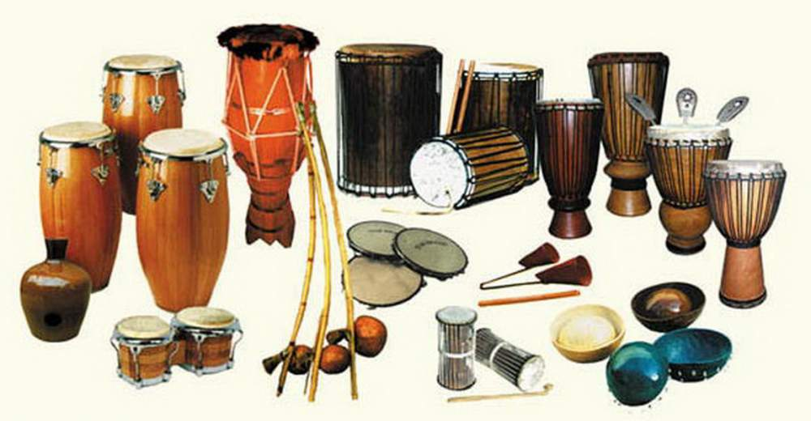

Perküsyon ya da vurmalı çalgılar, müzikte ritim yapısı kurulmak için kullanılır. Ritim, eski Yunanca da ‘akış’ anlamına gelmektedir. Değişen uzunlu ve vuruşların ortaya çıkardığı ses bütünlükleri ve serileri ritimleri oluşturur. Modern müzikte ritim yapıları, genellikle perküsyon aletleriyle icra edilir. Üzerine elle veya başka bir cisimle vurularak, çalkalayarak, sürtülerek ses elde edilen her obje vurmalı çalgıdır.
Vurmalı çalgılar genel olarak bir müzik parçasında ritmi belirler. Fakat vurmalı çalgılar aynı zamanda melodiyi de icra edebilirler. Askeri müziklerde vurmalı çalgılar askerlerin hareketlerinin belirleyicisi olmuşlardır. Klasik müzikte Haydn ve Mozart ile beraber en az bir timpani bölümünü içermeyen bir parça bulunmamaktadır. Caz müzikte de vurmalı çalgıların rolü çok önemlidir. Cazın alt dallarından birçoğu vurmalı çalgıların farklı ritimlerine göre adlandırılır. Popüler müzikte de vurmalı çalgıların önemi artarak devam etmiştir. Tüm bir hip hop fenomeni vurmalı çalgılar üzerine kurulmuştur. Rock müzik icra eden gruplarda davul setleri sahnenin ortasında bulunur.
